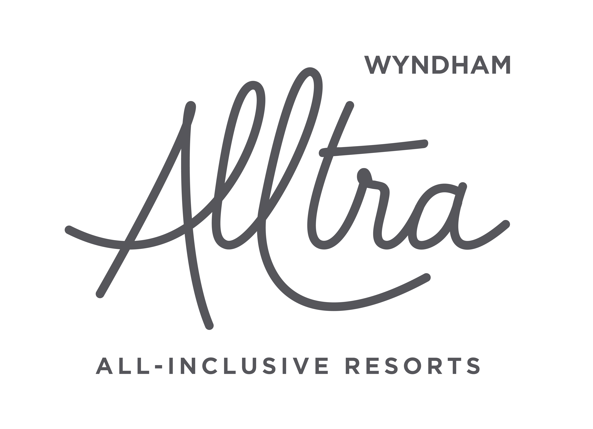
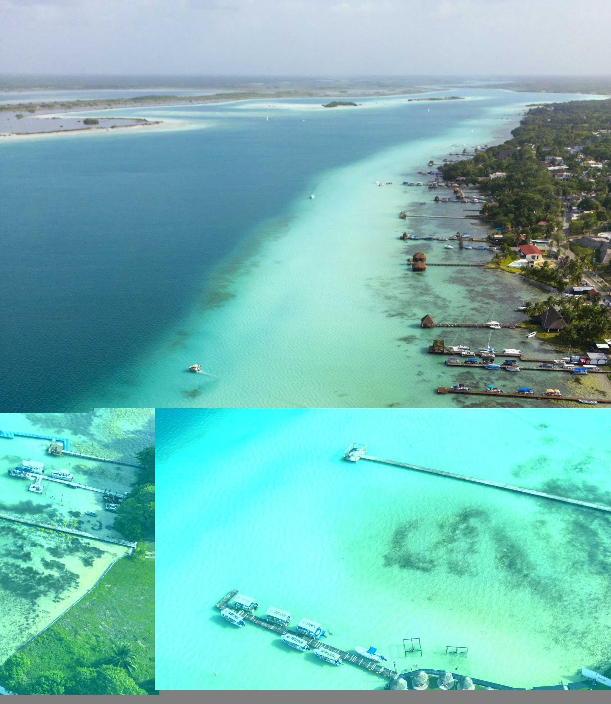
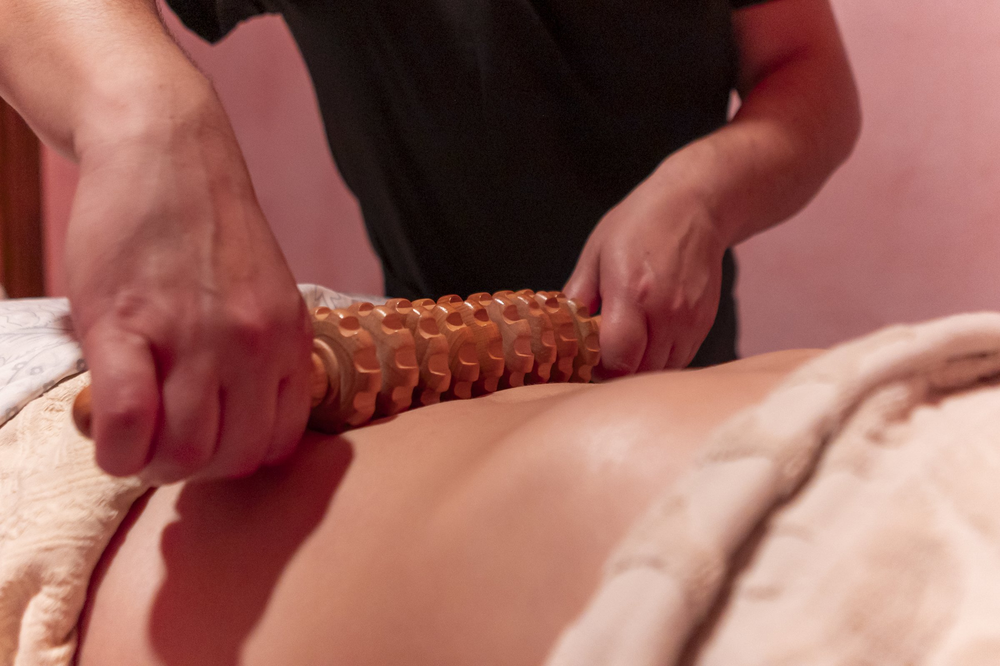

Hotel & hospitality
Rooms, pools, dining and spa, photographed and filmed with attention to the guest experience.

CREATIVE PROPOSAL
A CREATIVE PROPOSAL FOR WYNDHAM ALLTRA
Photography and film to bring the adults-only experience at Playa del Carmen to life.
Explore the proposal ↘01 / THE OPPORTUNITY
From the first look to the decision to book.
Wyndham Alltra Playa del Carmen offers an adults-only stay with dining, oceanfront pools and spa experiences. We propose creating a visual campaign around the moments your guests can look forward to.
Our team would produce new photography and film at the property, working with your team to choose the audiences and experiences that matter most.
EXPLORE THE OFFER ↗02 / CREATIVE DIRECTIONS
Choose a direction to see how we could tell your story.

WELLNESS / TAKE YOUR TIME
A considered look at the spa experience: atmosphere, human touch and the details that invite guests to slow down.
SPA / HOSPITALITY / GUEST EXPERIENCEAll images are examples from Juan's portfolio in Mexico. They do not depict Wyndham Alltra Playa del Carmen or its guests. New content for this proposal would be created on location.
03 / THE OFFER
One production shaped around the experience you want to sell and the channels your team uses.
Rooms, pools, dining and spa, photographed and filmed with attention to the guest experience.
Real moments with local collaborators or models, alongside selected destination experiences agreed with your team.
Use the finished photographs and film with your own team, or ask us to develop and produce the creative campaign together. Scope, timing and usage are agreed to fit the brief.
04 / BEHIND THE CAMERA
I'm Juan Aizpuru, a photographer and filmmaker with experience working across Mexico. I know the country and its culture, and can bring a team to create a dedicated production with local collaborators.
We would start by listening to your team's priorities and develop the visual story around the resort and its guests.
VIEW MY PORTFOLIO ↗LET'S MEET AT FITUR
Which guests, experiences and markets would you like to reach? I'd love to discuss the possibilities with your team.
Visit my website ↗Or connect with Juan Aizpuru on FITUR LiveConnect.